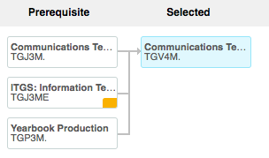

Join CougarVision

Prerequisites
Cougar Vision is listed as TGV4M, and requires prerequisites of either Communications Technology (TGJ3M), ITGS: Information Technology for a Global Society (TGJ3ME), or Yearbook Production (TGP3M).

Course Description
The digital broadcasting course encourages students to develop the skills necessary to achieve creative and critical independence in their knowledge, experience and enjoyment of television production. Students will develop an appreciation and understanding of the entire process of television production, and perform critical evaluation of their own and other broadcasts while working in “pods” to create a daily newsmagazine broadcast – “CougarVision.” Additionally students will be provided the opportunity to demonstrate their skills in the creation of augmented reality videos.